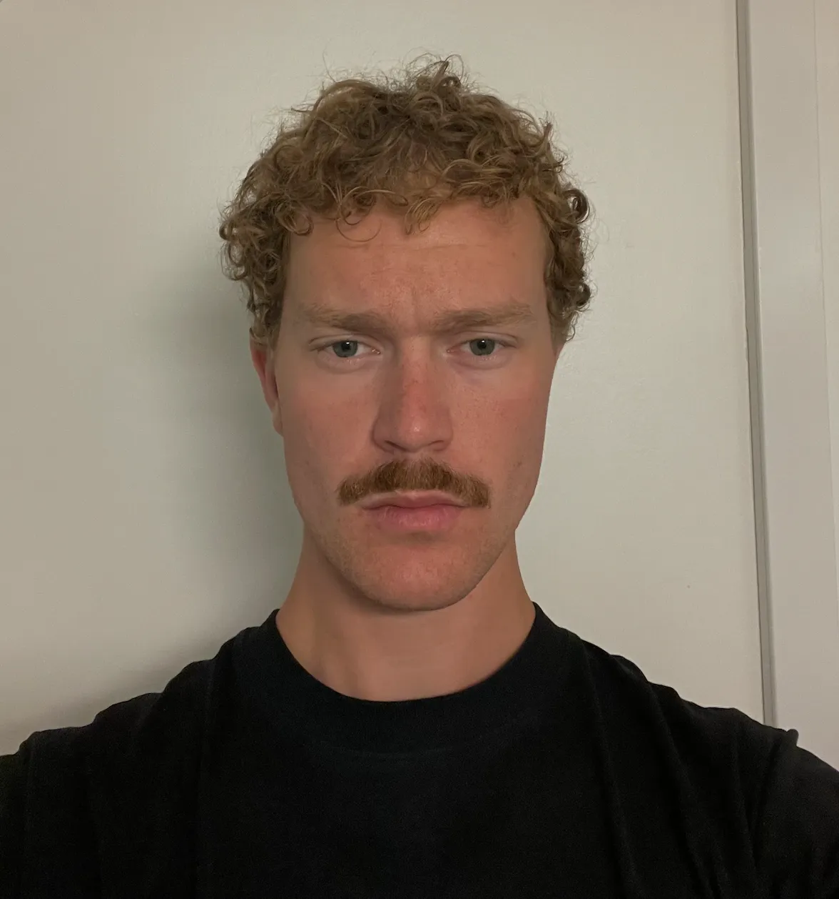

Om mig
Adrian Egeberg
Jeg er en 23-årig multimediedesignstuderende på EK (Erhvervsakademi København). Før jeg startede på uddannelsen, arbejdede jeg kort inden for fotografi og havde et højskoleophold med fokus på faget, hvor jeg opbyggede en grundlæggende forståelse for visuel kommunikation og æstetik. Jeg har valgt multimediedesignuddannelsen for at udvide mine kompetencer inden for grafisk design, webdesign og udvikling af webløsninger. Gennem studiet ønsker jeg at kombinere mine visuelle interesser med tekniske færdigheder og arbejde med digitale løsninger, der er både funktionelle, brugervenlige og visuelt gennemarbejdede.
 Se mine projekterErhverserfaring
Rengøring
2017 - 2018
Rengøring i en kiropraktor klinik
Bistro28
April 2018 - marts 2020
Opvasker/runner hos Bistro28
Madhus 24
Marts 2020 - juni 2020
Opvasker hos Madhus 24
Rosenfeldt
2. august 2021 - 31. oktober 2021
Fotograf hso Rosenfeldt
Konkylien
1. december 2021 - 15. april 2022
Pædagomedhjælper hos Konkylien
Kihoskh Distribution
18. april 2022 - 31. december 2022
Lagerchef og levering
Original Coffee
1. august 2023 - 31. marts 2024
Barista og assistant manager
Planet nusa
1. april 2024 - 31. december 2025
Cafe assistant manager
Uddannelse
Kildegård Privatskole
2008 - 2011
Western Academy of Beijing
2011 - 2013
Kildegård Privatskole
2013 - 2018
Aurehøj
2018 - 2021
Krogerup Højskole
8. januar 2023 - 24. juni 2023
EK - Erhvervsakademi København
25. august 2025 -